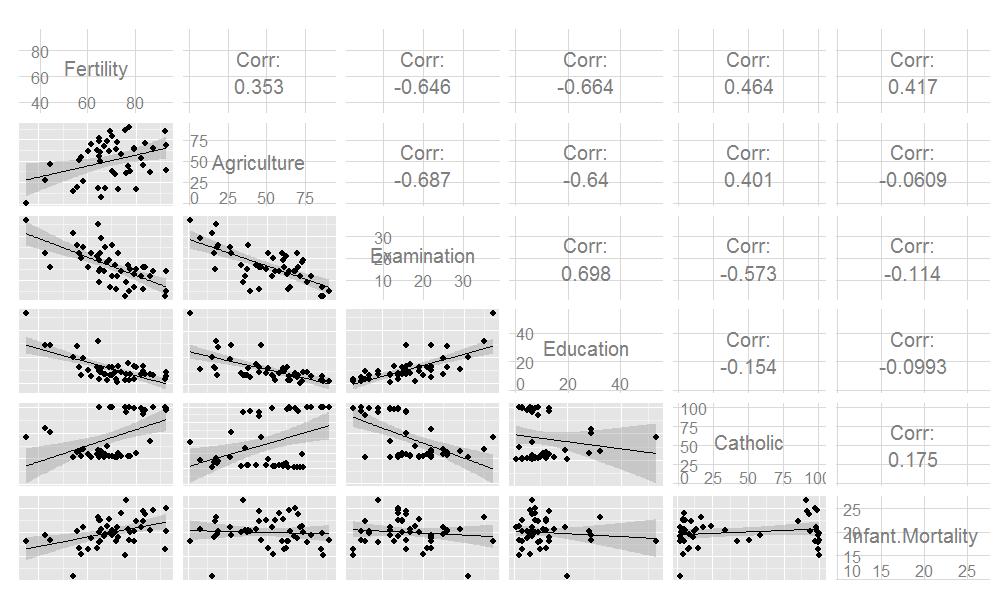

library(datasets); data(swiss); require(stats); require(graphics)
pairs(swiss, panel = panel.smooth, main = "Swiss data", col = 3 + (swiss$Catholic > 50))

Brian Caffo, Jeff Leek and Roger Peng
Johns Hopkins Bloomberg School of Public Health
library(datasets); data(swiss); require(stats); require(graphics)
pairs(swiss, panel = panel.smooth, main = "Swiss data", col = 3 + (swiss$Catholic > 50))
?swissStandardized fertility measure and socio-economic indicators for each of 47 French-speaking provinces of Switzerland at about 1888.
A data frame with 47 observations on 6 variables, each of which is in percent, i.e., in [0, 100].
All variables but ‘Fertility’ give proportions of the population.
lmsummary(lm(Fertility ~ . , data = swiss))
Estimate Std. Error t value Pr(>|t|)
(Intercept) 66.9152 10.70604 6.250 1.906e-07
Agriculture -0.1721 0.07030 -2.448 1.873e-02
Examination -0.2580 0.25388 -1.016 3.155e-01
Education -0.8709 0.18303 -4.758 2.431e-05
Catholic 0.1041 0.03526 2.953 5.190e-03
Infant.Mortality 1.0770 0.38172 2.822 7.336e-03
summary(lm(Fertility ~ Agriculture, data = swiss))$coefficients
Estimate Std. Error t value Pr(>|t|)
(Intercept) 60.3044 4.25126 14.185 3.216e-18
Agriculture 0.1942 0.07671 2.532 1.492e-02
How can adjustment reverse the sign of an effect? Let's try a simulation.
n <- 100; x2 <- 1 : n; x1 <- .01 * x2 + runif(n, -.1, .1); y = -x1 + x2 + rnorm(n, sd = .01)
summary(lm(y ~ x1))$coef
Estimate Std. Error t value Pr(>|t|)
(Intercept) 1.618 1.200 1.349 1.806e-01
x1 95.854 2.058 46.579 1.153e-68
summary(lm(y ~ x1 + x2))$coef
Estimate Std. Error t value Pr(>|t|)
(Intercept) 0.0003683 0.0020141 0.1829 8.553e-01
x1 -1.0215256 0.0166372 -61.4001 1.922e-79
x2 1.0001909 0.0001681 5950.1818 1.369e-271
z adds no new linear information, since it's a linear combination of variables already included. R just drops terms that are linear combinations of other terms.
z <- swiss$Agriculture + swiss$Education
lm(Fertility ~ . + z, data = swiss)
Call:
lm(formula = Fertility ~ . + z, data = swiss)
Coefficients:
(Intercept) Agriculture Examination Education Catholic
66.915 -0.172 -0.258 -0.871 0.104
Infant.Mortality z
1.077 NA
summary(lm(count ~ spray, data = InsectSprays))$coef
Estimate Std. Error t value Pr(>|t|)
(Intercept) 14.5000 1.132 12.8074 1.471e-19
sprayB 0.8333 1.601 0.5205 6.045e-01
sprayC -12.4167 1.601 -7.7550 7.267e-11
sprayD -9.5833 1.601 -5.9854 9.817e-08
sprayE -11.0000 1.601 -6.8702 2.754e-09
sprayF 2.1667 1.601 1.3532 1.806e-01
summary(lm(count ~
I(1 * (spray == 'B')) + I(1 * (spray == 'C')) +
I(1 * (spray == 'D')) + I(1 * (spray == 'E')) +
I(1 * (spray == 'F'))
, data = InsectSprays))$coef
Estimate Std. Error t value Pr(>|t|)
(Intercept) 14.5000 1.132 12.8074 1.471e-19
I(1 * (spray == "B")) 0.8333 1.601 0.5205 6.045e-01
I(1 * (spray == "C")) -12.4167 1.601 -7.7550 7.267e-11
I(1 * (spray == "D")) -9.5833 1.601 -5.9854 9.817e-08
I(1 * (spray == "E")) -11.0000 1.601 -6.8702 2.754e-09
I(1 * (spray == "F")) 2.1667 1.601 1.3532 1.806e-01
lm(count ~
I(1 * (spray == 'B')) + I(1 * (spray == 'C')) +
I(1 * (spray == 'D')) + I(1 * (spray == 'E')) +
I(1 * (spray == 'F')) + I(1 * (spray == 'A')), data = InsectSprays)
Call:
lm(formula = count ~ I(1 * (spray == "B")) + I(1 * (spray ==
"C")) + I(1 * (spray == "D")) + I(1 * (spray == "E")) + I(1 *
(spray == "F")) + I(1 * (spray == "A")), data = InsectSprays)
Coefficients:
(Intercept) I(1 * (spray == "B")) I(1 * (spray == "C")) I(1 * (spray == "D"))
14.500 0.833 -12.417 -9.583
I(1 * (spray == "E")) I(1 * (spray == "F")) I(1 * (spray == "A"))
-11.000 2.167 NA
summary(lm(count ~ spray - 1, data = InsectSprays))$coef
Estimate Std. Error t value Pr(>|t|)
sprayA 14.500 1.132 12.807 1.471e-19
sprayB 15.333 1.132 13.543 1.002e-20
sprayC 2.083 1.132 1.840 7.024e-02
sprayD 4.917 1.132 4.343 4.953e-05
sprayE 3.500 1.132 3.091 2.917e-03
sprayF 16.667 1.132 14.721 1.573e-22
unique(ave(InsectSprays$count, InsectSprays$spray))
[1] 14.500 15.333 2.083 4.917 3.500 16.667
spray2 <- relevel(InsectSprays$spray, "C")
summary(lm(count ~ spray2, data = InsectSprays))$coef
Estimate Std. Error t value Pr(>|t|)
(Intercept) 2.083 1.132 1.8401 7.024e-02
spray2A 12.417 1.601 7.7550 7.267e-11
spray2B 13.250 1.601 8.2755 8.510e-12
spray2D 2.833 1.601 1.7696 8.141e-02
spray2E 1.417 1.601 0.8848 3.795e-01
spray2F 14.583 1.601 9.1083 2.794e-13
Equivalently \[Var(\hat \beta_B - \hat \beta_C) = Var(\hat \beta_B) + Var(\hat \beta_C) - 2 Cov(\hat \beta_B, \hat \beta_C)\]
fit <- lm(count ~ spray, data = InsectSprays) #A is ref
bbmbc <- coef(fit)[2] - coef(fit)[3] #B - C
temp <- summary(fit)
se <- temp$sigma * sqrt(temp$cov.unscaled[2, 2] + temp$cov.unscaled[3,3] - 2 *temp$cov.unscaled[2,3])
t <- (bbmbc) / se
p <- pt(-abs(t), df = fit$df)
out <- c(bbmbc, se, t, p)
names(out) <- c("B - C", "SE", "T", "P")
round(out, 3)
B - C SE T P
13.250 1.601 8.276 0.000
http://www.un.org/millenniumgoals/pdf/MDG_FS_1_EN.pdf
http://apps.who.int/gho/athena/data/GHO/WHOSIS_000008.csv?profile=text&filter=COUNTRY:;SEX:
#download.file("http://apps.who.int/gho/athena/data/GHO/WHOSIS_000008.csv?profile=text&filter=COUNTRY:*;SEX:*","hunger.csv",method="curl")
hunger <- read.csv("hunger.csv")
hunger <- hunger[hunger$Sex!="Both sexes",]
head(hunger)
Indicator Data.Source PUBLISH.STATES Year WHO.region
1 Children aged <5 years underweight (%) NLIS_310044 Published 1986 Africa
2 Children aged <5 years underweight (%) NLIS_310233 Published 1990 Americas
3 Children aged <5 years underweight (%) NLIS_312902 Published 2005 Americas
5 Children aged <5 years underweight (%) NLIS_312522 Published 2002 Eastern Mediterranean
6 Children aged <5 years underweight (%) NLIS_312955 Published 2008 Africa
8 Children aged <5 years underweight (%) NLIS_312963 Published 2008 Africa
Country Sex Display.Value Numeric Low High Comments
1 Senegal Male 19.3 19.3 NA NA NA
2 Paraguay Male 2.2 2.2 NA NA NA
3 Nicaragua Male 5.3 5.3 NA NA NA
5 Jordan Female 3.2 3.2 NA NA NA
6 Guinea-Bissau Female 17.0 17.0 NA NA NA
8 Ghana Male 15.7 15.7 NA NA NA
lm1 <- lm(hunger$Numeric ~ hunger$Year)
plot(hunger$Year,hunger$Numeric,pch=19,col="blue")
\[Hu_i = b_0 + b_1 Y_i + e_i\]
\(b_0\) = percent hungry at Year 0
\(b_1\) = decrease in percent hungry per year
\(e_i\) = everything we didn't measure
lm1 <- lm(hunger$Numeric ~ hunger$Year)
plot(hunger$Year,hunger$Numeric,pch=19,col="blue")
lines(hunger$Year,lm1$fitted,lwd=3,col="darkgrey")
plot(hunger$Year,hunger$Numeric,pch=19)
points(hunger$Year,hunger$Numeric,pch=19,col=((hunger$Sex=="Male")*1+1))
\[HuF_i = bf_0 + bf_1 YF_i + ef_i\]
\(bf_0\) = percent of girls hungry at Year 0
\(bf_1\) = decrease in percent of girls hungry per year
\(ef_i\) = everything we didn't measure
\[HuM_i = bm_0 + bm_1 YM_i + em_i\]
\(bm_0\) = percent of boys hungry at Year 0
\(bm_1\) = decrease in percent of boys hungry per year
\(em_i\) = everything we didn't measure
lmM <- lm(hunger$Numeric[hunger$Sex=="Male"] ~ hunger$Year[hunger$Sex=="Male"])
lmF <- lm(hunger$Numeric[hunger$Sex=="Female"] ~ hunger$Year[hunger$Sex=="Female"])
plot(hunger$Year,hunger$Numeric,pch=19)
points(hunger$Year,hunger$Numeric,pch=19,col=((hunger$Sex=="Male")*1+1))
lines(hunger$Year[hunger$Sex=="Male"],lmM$fitted,col="black",lwd=3)
lines(hunger$Year[hunger$Sex=="Female"],lmF$fitted,col="red",lwd=3)
\[Hu_i = b_0 + b_1 \mathbb{1}(Sex_i="Male") + b_2 Y_i + e^*_i\]
\(b_0\) - percent hungry at year zero for females
\(b_0 + b_1\) - percent hungry at year zero for males
\(b_2\) - change in percent hungry (for either males or females) in one year
\(e^*_i\) - everything we didn't measure
lmBoth <- lm(hunger$Numeric ~ hunger$Year + hunger$Sex)
plot(hunger$Year,hunger$Numeric,pch=19)
points(hunger$Year,hunger$Numeric,pch=19,col=((hunger$Sex=="Male")*1+1))
abline(c(lmBoth$coeff[1],lmBoth$coeff[2]),col="red",lwd=3)
abline(c(lmBoth$coeff[1] + lmBoth$coeff[3],lmBoth$coeff[2] ),col="black",lwd=3)
\[Hu_i = b_0 + b_1 \mathbb{1}(Sex_i="Male") + b_2 Y_i + b_3 \mathbb{1}(Sex_i="Male")\times Y_i + e^+_i\]
\(b_0\) - percent hungry at year zero for females
\(b_0 + b_1\) - percent hungry at year zero for males
\(b_2\) - change in percent hungry (females) in one year
\(b_2 + b_3\) - change in percent hungry (males) in one year
\(e^+_i\) - everything we didn't measure
lmBoth <- lm(hunger$Numeric ~ hunger$Year + hunger$Sex + hunger$Sex*hunger$Year)
plot(hunger$Year,hunger$Numeric,pch=19)
points(hunger$Year,hunger$Numeric,pch=19,col=((hunger$Sex=="Male")*1+1))
abline(c(lmBoth$coeff[1],lmBoth$coeff[2]),col="red",lwd=3)
abline(c(lmBoth$coeff[1] + lmBoth$coeff[3],lmBoth$coeff[2] +lmBoth$coeff[4]),col="black",lwd=3)
summary(lmBoth)
Call:
lm(formula = hunger$Numeric ~ hunger$Year + hunger$Sex + hunger$Sex *
hunger$Year)
Residuals:
Min 1Q Median 3Q Max
-25.91 -11.25 -1.85 7.09 46.15
Coefficients:
Estimate Std. Error t value Pr(>|t|)
(Intercept) 603.5058 171.0552 3.53 0.00044 ***
hunger$Year -0.2934 0.0855 -3.43 0.00062 ***
hunger$SexMale 61.9477 241.9086 0.26 0.79795
hunger$Year:hunger$SexMale -0.0300 0.1209 -0.25 0.80402
---
Signif. codes: 0 '***' 0.001 '**' 0.01 '*' 0.05 '.' 0.1 ' ' 1
Residual standard error: 13.2 on 944 degrees of freedom
Multiple R-squared: 0.0318, Adjusted R-squared: 0.0287
F-statistic: 10.3 on 3 and 944 DF, p-value: 1.06e-06
\[ E[Y_i | X_{1i}=x_1, X_{2i}=x_2] = \beta_0 + \beta_1 x_{1} + \beta_2 x_{2} + \beta_3 x_{1}x_{2} \] Holding \(X_2\) constant we have \[ E[Y_i | X_{1i}=x_1+1, X_{2i}=x_2]-E[Y_i | X_{1i}=x_1, X_{2i}=x_2] = \beta_1 + \beta_3 x_{2} \] And thus the expected change in \(Y\) per unit change in \(X_1\) holding all else constant is not constant. \(\beta_1\) is the slope when \(x_{2} = 0\). Note further that: \[ E[Y_i | X_{1i}=x_1+1, X_{2i}=x_2+1]-E[Y_i | X_{1i}=x_1, X_{2i}=x_2+1] \] \[ -E[Y_i | X_{1i}=x_1+1, X_{2i}=x_2]-E[Y_i | X_{1i}=x_1, X_{2i}=x_2] \] \[ =\beta_3 \] Thus, \(\beta_3\) is the change in the expected change in \(Y\) per unit change in \(X_1\), per unit change in \(X_2\).
Or, the change in the slope relating \(X_1\) and \(Y\) per unit change in \(X_2\).
\[Hu_i = b_0 + b_1 In_i + b_2 Y_i + b_3 In_i \times Y_i + e^+_i\]
\(b_0\) - percent hungry at year zero for children with whose parents have no income
\(b_1\) - change in percent hungry for each dollar of income in year zero
\(b_2\) - change in percent hungry in one year for children whose parents have no income
\(b_3\) - increased change in percent hungry by year for each dollar of income - e.g. if income is $10,000, then change in percent hungry in one year will be
\[b_2 + 1e4 \times b_3\]
\(e^+_i\) - everything we didn't measure
Lot's of care/caution needed!